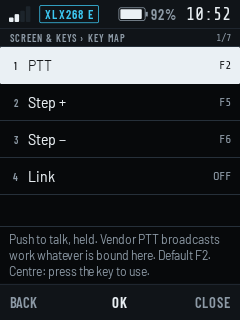

M01·DPLUS
D-STAR no rádio que já trazes contigo
O VoxDSTAR liga um rádio PTT Android ou um telemóvel a refletores D-STAR. Ouves cada passagem com o indicativo de quem fala e transmites na tecla lateral. O codec AMBE corre na aplicação: sem dongle e sem hotspot.
- REFLETORES
- REF · XLX · XRF · DCS
- CODEC
- AMBE, no aparelho
- OUVIDO NO AR
- REF · XLX
M02·DPLUS·CASA
Nada entre o microfone e o refletor
A voz D-STAR é AMBE, um codec que normalmente vive num chip: no rádio, num dongle USB ou por trás de um hotspot. O VoxDSTAR corre-o em software com o xombe, uma implementação aberta e independente, e fala ele próprio os protocolos dos refletores.
- Microfone
O do rádio, um auricular ou Bluetooth.
- AMBE 2400
Codificado no aparelho, 20 ms de cada vez.
- DPlus · DExtra · DCS
Ligação, manutenção e religação feitas pela aplicação.
- Refletor
REF, XLX, XRF ou DCS, por qualquer ligação de dados.
As duas etapas sombreadas correm dentro do VoxDSTAR.
DispensaDONGLE DVHOTSPOTRÁDIO D-STAR
- 1Codificar, HYT-P503,4–3,9 MS
Por trama de 20 ms: cerca de um quinto de um núcleo num rádio de 32 bits.
- 2Codificar, Pixel 92,0 MS
Por trama de 20 ms. Descodificar leva menos de meio milissegundo em ambos.
M03·DPLUS
Primeiro as teclas. O toque é o recurso
Num rádio, o polegar já sabe onde está tudo. O VoxDSTAR usa o PTT lateral e o botão rotativo, e aprende qualquer outra tecla que carregues para ele.
- 1PTTF2 · LATERAL
Mantém premido para falar, ou fixa: um toque começa a passagem, outro termina-a.
- 2Botão rotativoF5 · F6
Percorre as memórias ou os módulos e volta a ligar quando paras de rodar.
- 3Aprender uma teclaCARREGA
Associa PTT, passo, ligar, menu, responder e repetir à tecla que carregares.
- 4AuricularFIO · BT
O botão de um auricular ou de um dispositivo Bluetooth pode acionar o PTT.
- 5Nunca por enganoTX DESL
O PTT espera enquanto uma estação fala, e o limite de TX avisa antes de cortar.

M04·DPLUS
Ecrã desligado. Continua no ar
A ligação mantém-se com o rádio no bolso. As chamadas chegam e o PTT continua a funcionar. Uma chamada pode acender o ecrã, e carregar no PTT também.
- 1Acordar em RX5 S
Uma chamada ouvida com o ecrã apagado acende-o, por cima do bloqueio.
- 2Acordar em TXLIG
Carregar no PTT acende o ecrã e mantém-no aceso enquanto falas.
- 3Ligação perdida2 S … 1 MIN
Uma ligação que cai é refeita, de imediato quando a rede volta.
- 4Iniciar com o rádioLIG · DESL
Liga o rádio e ele liga-se sozinho ao refletor. O Android deixa-o escutar até abrires a aplicação uma vez.
Indicativo, tempo e qualidade de receção enquanto ouves.
Vermelho só enquanto transmites, para nunca haver dúvida.
Indicativos de exemplo.

M05·DPLUS
Os teus refletores, à distância de um clique do botão
Guarda os refletores e módulos que usas como memórias, marca um como Casa e percorre-os com o botão rotativo. Precisas de um novo? Encontra-o nas listas de refletores sem escrever endereços.
- 1MemóriasM01 …
Refletor, módulo, nome. Regresso a casa após um período sem tráfego.
- 2Procurar refletorREF · XRF · XLX
As listas públicas REF, XRF e XLX, obtidas quando pedes.
- 3Quem estáXLX
Lê o painel de um XLX: módulos em uso, os seus nomes, quem está ligado e quem foi ouvido por último.
- 4URCQCQCQ
CQ, Eco, Desligar, Info ou um indicativo. Responde à última estação ouvida com um toque.
- 5OuvidosREPETIR
As últimas dez passagens guardadas em memória, para ouvir de novo se perdeste alguma.
- 6MaisEM TESTE
Vigiar até três módulos extra, posições D-PRS, encaminhamento por indicativo via ircDDB, anúncios por voz ou Morse.

M06·DPLUS
Feito num ecrã de 240 píxeis. À vontade num telemóvel
O VoxDSTAR foi desenhado primeiro para o ecrã mais pequeno: um Hytera HYT-P50 de 240 × 320. Os telemóveis recebem o mesmo ecrã, com espaço de sobra e uma tecla PTT ao alcance.
- Hytera HYT-P50ANDROID 12 · 32 BITS
Onde é usado todos os dias. PTT lateral, botão rotativo, e o cartão do ecrã inicial mostra o refletor e quem fala.
- Smartship m3_hANDROID 9 · 32 BITS
Funciona tal como está. PTT, botão rotativo e teclas laterais chegam como o firmware as envia.
- Telemóveis AndroidANDROID 8.0 OU MAIS
Testado num Pixel 9. PTT no ecrã ou no botão de um auricular.

- 1IdiomasEN · PT
Inglês e português, ou o idioma do rádio.
- 2EcrãNOITE · DIA
Um ecrã escuro para interiores, um claro que se lê ao sol.
- 3Partilhar definiçõesQR
O teu indicativo e memórias num código QR ou numa ligação, para configurar um segundo rádio.
M07·UR
Instala e chama CQ
Transfere o APK do GitHub e instala-o no rádio ou no telemóvel. Põe o teu indicativo, escolhe um refletor e estás no ar.
ANDROID 8.0+ · ARM 32/64 BITS, x86-64
- 1Licença e indicativoOBRIGATÓRIO
Transmites em redes de radioamador, por isso aplicam-se as regras habituais.
- 2Refletores REFREGISTADO
Os refletores REF só aceitam indicativos registados no sistema de gateways D-STAR. O VoxDSTAR autentica-se por ti, como um hotspot. Os XLX normalmente não pedem nada.
- 3Ligação de dadosWI-FI · MÓVEL
Qualquer ligação que chegue ao refletor.
A ligação e os contactos nos dois sentidos estão confirmados em refletores REF e XLX. As ligações DCS, as posições D-PRS, o encaminhamento por indicativo e a vigia de módulos já estão na aplicação e ainda estão a ser experimentados no ar.
O VoxDSTAR é um projeto independente de CT7BLE. Não está afiliado nem é apoiado pela ICOM, pela JARL ou pela DVSI; "D-STAR" é o nome do protocolo que fala. O codec AMBE é o xombe, uma implementação de código aberto independente.